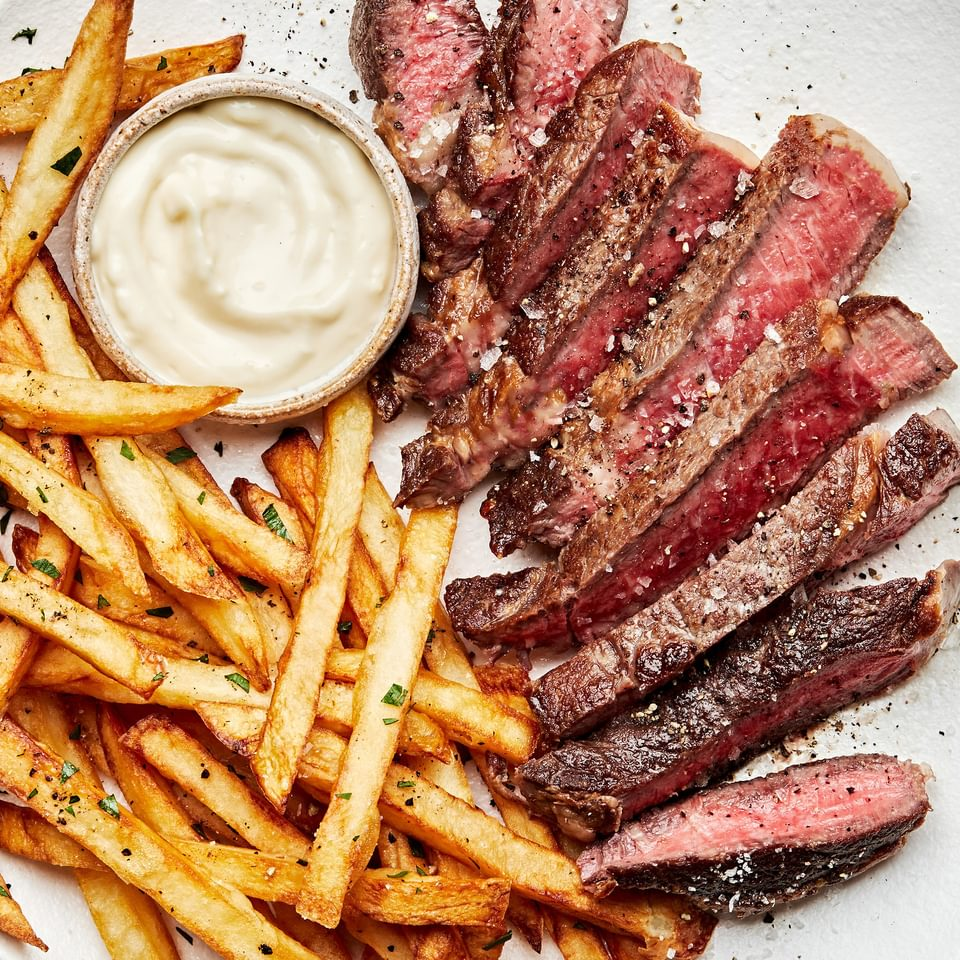

Parisian-Style Steak Frites

This recipe comes together in under 45 minutes and is fantastic to serve up to family or guests at an entertaining event. It’s something you may see in a restaurant. However, if you make this, you may never eat it again because it’s just that delicious.
Ingredients
- 1 teaspoon vegetable oil, or as needed
- 2 hanger steaks
- 2 tablespoons minced shallot
- ¼ cup dry white wine
- ¼ cup beef broth
- 2 anchovy fillets, chopped, or more to taste
- 3 tablespoons butter
- 1 tablespoon minced fresh parsley
- 1 tablespoon minced fresh chervil
- 1 teaspoon minced fresh thyme
Steps
- Heat vegetable oil in a heavy skillet over medium-high heat. Cook steaks to desired doneness, about 5 minutes per side for medium; an instant-read thermometer inserted into the center should read 130 degrees F (54 degrees C). Transfer steaks to a plate to rest.
- Place shallots in the skillet and cook until beginning to soften, about 2 minutes. Pour wine into the skillet and bring to a boil while scraping the browned bits of food off of the bottom of the pan with a wooden spoon. Add broth and anchovy; cook until thickened to sauce consistency, 2 to 3 minutes. Remove skillet from heat; whisk butter in gradually. Stir parsley, chervil, and thyme into the sauce. Purée sauce in the skillet with an immersion blender until smooth.
- Cut steaks into thin slices across the grain; spoon sauce over slices.